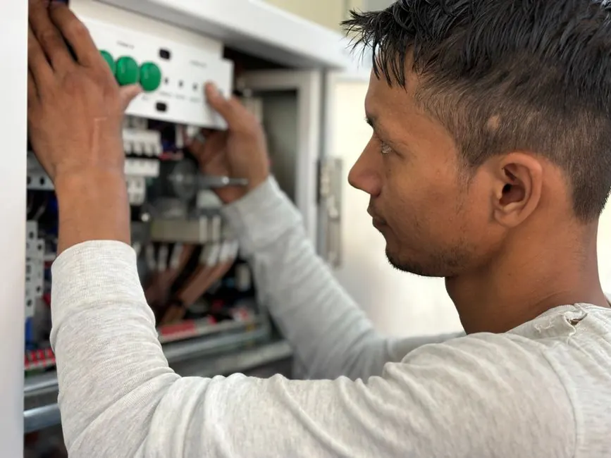

Silent, Smooth Drum Operation Restored
Dryer Noise & Squeaking Repair Sarasota FL
A noisy dryer is warning you that internal rotating components are failing. Whether your machine is squealing like metal-on-metal, thumping rhythmically, or rattling, our Sarasota technicians carry genuine OEM rollers, pulleys, and bearings for all major dryer brands.
OEM roller kitsSame-day silenceWritten warranty
Diagnosing the sound
Common Dryer Noises We Eliminate in Sarasota
Different sounds indicate specific failing parts. Here is how we pinpoint and eliminate your dryer noise:
Loud High-Pitched Squeal
Caused by worn drum support rollers or a dry idler pulley shaft. We install premium lubricated OEM roller kits.
Continuous Deep Thumping
Caused by flat-spotted rollers or broken drum weld seams. We restore smooth 360-degree rotation.
Metal Scraping or Grinding
Caused by worn nylon drum glides or a cracked rear bearing sleeve allowing the drum to rub against the chassis.
Violent Vibrating or Chattering
Caused by a loose blower wheel or broken motor mount pads. We tighten, balance, and align all drive assemblies.
Expert component overhaul
Complete Roller & Bearing Maintenance in Sarasota
When one roller begins squealing, the others are usually right behind it. Rather than making multiple return visits, our technicians rebuild the entire rotation assembly — replacing front glides, rear support wheels, and tension pulleys in a single visit.
We work on Whirlpool, Samsung, LG, Maytag, GE, Kenmore, and Bosch dryers throughout Sarasota, Palmer Ranch, Bee Ridge, and Gulf Gate Estates.

Precision inspectionEvery noise call includes motor amp draw and drum alignment diagnostics.
Pricing transparency
Dryer Noise Repair Pricing in Sarasota
$140 - $320 depending on parts
Idler Pulley Replacement
Quick repair when the spring-loaded belt tensioner wheel is the sole cause of the squeak.
Full Roller & Glide Kit
Comprehensive replacement of all drum support wheels, axles, and front Teflon glides.
Blower Wheel or Motor
When foreign objects crack the blower fan or internal motor bearings have failed.
Why is my dryer making a high-pitched squeaking noise?
A continuous high-pitched squeak is almost always caused by worn drum support rollers or a dried-out idler pulley tension wheel. Replacing the rollers and pulley restores quiet operation immediately.
What causes a loud thumping sound in the dryer?
Thumping sounds are typically caused by flat spots on rubber drum rollers (especially after a heavy load has sat hot), a cracked drive belt, or worn rear drum glides and bearings.
Is it safe to run a dryer that is making grinding noises?
No. Metal-on-metal scraping or grinding indicates worn front drum glides or failing motor bearings. Continuing to run the machine can permanently gouge the metal drum or destroy the drive motor.
How much does it cost to fix a noisy dryer in Sarasota?
Dryer noise repairs in Sarasota generally cost between $140 and $320, which covers professional disassembly, genuine factory roller/pulley kits, and testing.
Enjoy quiet laundry again
Stop The Squeaking Today
Our Sarasota technicians carry full roller and pulley kits on every truck. Call now for same-day service.

Talk with the local team
Request Dryer Noise Repair
Contact our local Sarasota dispatch desk for fast same-day diagnosis and repair appointments.
Instant Phone Dispatch
Call Directly for Immediate Service
No waiting for email replies or form submissions. Speak directly with our local Sarasota dispatch team to confirm technician availability and same-day arrival times.
- Same-Day Arrival: Vans stocked with common dryer parts
- Upfront Quotes: Clear diagnostic estimates before work
- All Brands Serviced: Electric & gas dryer certified
- Local Dispatch: Originating from 3856 Yellowstone Cir